第 2 章 系统建模
……我问费米，看到我们计算出的数字与他的测量数字如此一致，他难道不觉得印象深刻吗。他回答说，你们在计算中用了多少个任意参数？我想了一会儿那些截断手续，说，四个。他说，我记得我的朋友约翰尼·冯·诺伊曼常说，给我四个参数，我可以拟合一头大象；给我五个参数，我还能让它的鼻子动起来。
模型是对系统动态的一种精确表示，用来通过分析和仿真回答问题。我们选择什么模型，取决于我们想回答什么问题。因此，同一个动态系统可以有多个模型，并且针对不同现象具有不同保真度。本章介绍建模这一概念，并给出反馈与控制系统中常用的两种具体方法的基础材料：微分方程与差分方程。
2.1 建模概念
模型是对物理系统、生物系统或信息系统的数学表示。模型让我们能够推理系统，并预测系统会如何行为。本书主要关心动态系统的模型，尤其关心描述系统输入输出行为的模型，并且经常使用状态空间形式。
粗略地说，动态系统是动作效果不会立刻出现的系统。例如，踩下汽车油门时，车速不会立刻改变；打开加热器时，房间温度也不会瞬间升高。类似地，服下阿司匹林之后，头痛不会马上消失，因为药物需要时间起效。在商业系统中，增加某个开发项目的资金，短期内不会增加收入，虽然长期来看有可能如此，如果这是一项好的投资。这些都是动态系统的例子，其中系统行为随时间演化。
本节余下部分概述建模中的若干关键概念。这里引入的数学细节，会在本章后文更充分地展开。
力学传统
动态研究起源于人们对行星运动的描述。其基础是第谷·布拉赫对行星的详细观测，以及开普勒的结果。开普勒从经验上发现，行星轨道可以很好地用椭圆描述。牛顿随后开启了一个雄心勃勃的研究计划，试图解释为什么行星按椭圆运动。他发现，这种运动可以由万有引力定律以及力等于质量乘以加速度的公式解释。在这个过程中，他也发明了微积分和微分方程。
牛顿力学的胜利之一，是人们认识到，只要知道所有行星当前的位置和速度，就能预测行星运动。过去的运动轨迹并不需要知道。动态系统的状态，是一组变量，用于完整刻画系统运动，以便预测未来运动。对行星系统来说，状态就是各行星的位置和速度。所有可能状态构成的集合称为状态空间。
动态系统的一类常见数学模型是常微分方程。在力学中，最简单的例子之一是带阻尼的弹簧质量系统：
图 2.1 展示了这个系统。变量 \(q\in\mathbb{R}\) 表示质量块 \(m\) 相对于弹簧静止位置的位置。我们用 \(\dot q\) 表示 \(q\) 对时间的导数，也就是质量块速度，用 \(\ddot q\) 表示二阶导数，也就是加速度。这里假设弹簧满足胡克定律，即力与位移成正比。摩擦元件，也就是阻尼器，被取为非线性函数 \(c(\dot q)\)，可以表示静摩擦和黏性阻力等效应。位置 \(q\) 和速度 \(\dot q\) 代表系统的瞬时状态。我们说这个系统是二阶系统，因为它的动态取决于 \(q\) 的前两个导数。
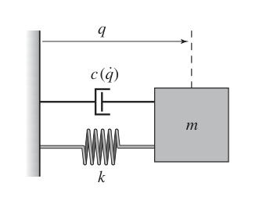
位置和速度的演化可以用时间图或相图来描述，二者见图 2.2。左侧时间图显示各个状态随时间变化的取值。右侧相图显示系统的向量场，也就是状态空间中每一点处的状态速度，图中用箭头表示。此外，图中还叠加了一些不同初始条件下的状态轨迹。相图把方程直观地表示为向量场或流。二阶系统，也就是两个状态的系统，可以这样表示；遗憾的是，对更高阶方程来说，这种方式很难可视化。
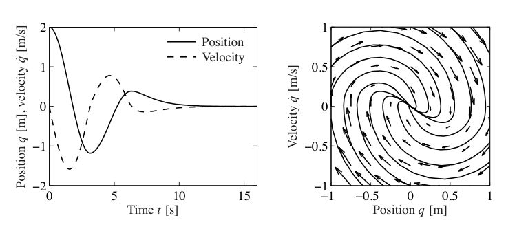
微分方程 (2.1) 称为自治系统，因为没有外部影响。这样的模型很适合天体力学，因为影响行星运动很困难。在许多例子中，对外部扰动或受控力对系统的影响建模很有用。一种捕捉这种影响的方法，是把式 (2.1) 替换为
其中 \(u\) 表示外部输入的影响。模型 (2.2) 称为受迫微分方程或受控微分方程。它意味着状态变化率可以受到输入 \(u(t)\) 的影响。加入输入后，模型更加丰富，也允许提出新的问题。例如，我们可以考察外部扰动对系统轨迹有什么影响。或者，如果输入变量可以被控制地调制，我们可以分析能否通过合适选择输入，把系统从状态空间中的一个点引导到另一个点。
电气工程传统
电气工程发展出了一种不同的动态观。电子放大器设计使人们把注意力放在输入输出行为上。系统被视为把输入变换为输出的装置，如图 2.3 所示。从概念上看，输入输出模型可以看成一张巨大的输入输出表。给定某段时间内的输入信号 \(u(t)\)，模型应产生相应输出 \(y(t)\)。
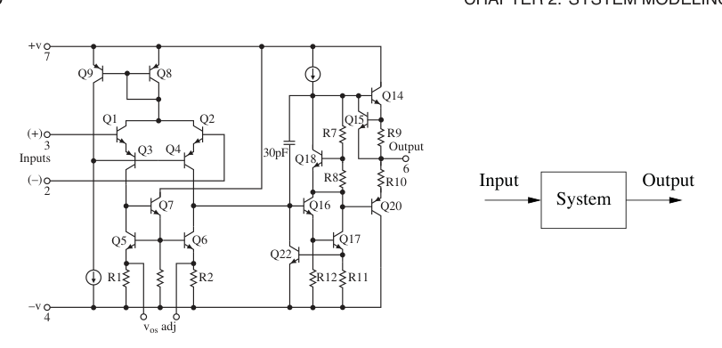
输入输出框架在许多工程学科中都被使用，因为它允许我们把系统分解为通过输入与输出连接起来的各个部件。于是，我们可以把收音机或电视机这样的复杂系统分解为可管理的部分，例如接收器、解调器、放大器和扬声器。每一部分都有一组输入和输出；通过适当设计，这些部件可以互连成完整系统。
输入输出观点对于线性时不变系统这一特殊类别尤其有用。本章后面会更仔细地定义这个术语。粗略地说，如果把两个输入叠加，也就是相加，所得到的输出等于两个输入分别作用时对应输出之和，那么系统是线性的。如果某个给定输入产生的输出响应不依赖该输入施加的时刻，那么系统是时不变的。
许多电气工程系统可以用线性时不变系统建模，因此人们发展出大量工具来分析它们。其中一个工具是阶跃响应，它描述从零突然变为某个常值的输入，也就是阶跃输入，与相应输出之间的关系。后文会看到，阶跃响应对刻画动态系统性能非常有用，也常用于指定期望动态。图 2.4a 给出一个阶跃响应例子。
另一种描述线性时不变系统的方法，是用系统对正弦输入信号的响应来表示。这称为频率响应，由此发展出一套内容丰富、力量很强的理论，其中包含许多概念和有用结果。这些结果基于复变函数理论和拉普拉斯变换。频率响应背后的基本思想是，可以用系统对正弦输入的稳态响应完整刻画系统行为。粗略地说，这是通过把任意信号分解为正弦信号的线性组合来完成的，例如使用傅里叶变换，然后利用线性性，把各个频率上的响应组合起来计算输出。图 2.4b 给出一个频率响应例子。
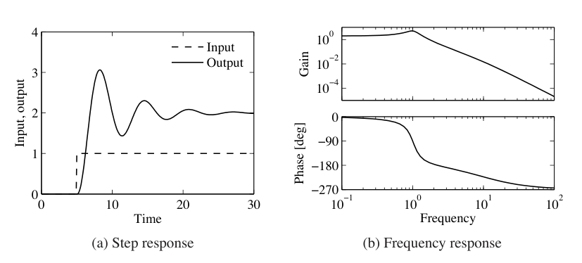
输入输出观点很自然地适合用实验确定系统动态。在这种方法中，通过记录系统对特定输入的响应来刻画系统，例如阶跃输入，或者跨越一段频率范围的一组正弦输入。
控制观点
控制理论在 20 世纪 40 年代作为一门学科出现时，关于动态的处理受到电气工程输入输出观点的强烈影响。从 20 世纪 50 年代后期开始，控制的发展出现第二波，它受到力学启发，采用状态空间视角。空间飞行是一个典型例子，其中对航天器轨道的精确控制至关重要。这两种观点逐渐合并，形成今天输入输出系统的状态空间表示。
状态空间模型的发展，要求修改力学模型，使其包括外部执行器和传感器，并使用更一般的方程形式。在控制中，式 (2.2) 给出的模型被替换为
其中 \(x\) 是状态变量向量，\(u\) 是控制信号向量，\(y\) 是测量向量。项 \(dx/dt\) 表示 \(x\) 对时间的导数，此时它也是向量，而 \(f\) 与 \(h\) 是可能非线性的映射，把各自的自变量映射到适当维数的向量。对力学系统而言，状态由系统的位置和速度组成，因此对带阻尼弹簧质量系统有 \(x=(q,\dot q)\)。注意，在控制表述中，我们把动态建模为一阶微分方程。不过后面会看到，只要适当定义状态以及映射 \(f\) 和 \(h\)，这种形式也能捕捉高阶微分方程的动态。
加入输入和输出，使经典问题更加丰富，并带来了许多新概念。例如，我们自然会问，通过适当选择 \(u\)，是否能够到达可能状态 \(x\)，这称为可达性；测量 \(y\) 是否含有足够信息来重构状态，这称为可观性。第 6 章和第 7 章会更详细地讨论这些主题。
形成控制观点的最后一个重要发展，是扰动与模型不确定性成为理论中的关键元素。把扰动简单建模为阶跃和正弦这类确定信号有一个缺点，即这类信号可以被精确预测。更现实的方法是把扰动建模为随机信号。这个观点在预测与控制之间给出了自然联系。输入输出表示与状态空间表示这两种视角，在不确定性建模中特别有用，因为状态模型便于描述标称模型，而不确定性更容易用输入输出模型描述，常常通过频率响应描述。不确定性会贯穿本书，并在第 12 章中特别详细地研究。
控制系统设计中的一个有趣观察是，反馈系统经常可以基于相对简单的模型进行分析和设计。原因在于反馈系统本身具有鲁棒性。不过，模型的其他用途可能要求更高复杂性和更高精度。一个例子是前馈控制策略，其中人们用模型预先计算能使系统以某种方式响应的输入。另一个领域是系统验证，人们希望确认系统的详细响应是否符合设计。由于模型用途不同，使用一个复杂度和保真度各异的模型层次是常见做法。
多领域建模
建模是许多学科中的基本元素，不过不同学科的传统和方法可能彼此不同，前面对机械工程和电气工程的讨论已经说明了这一点。系统工程中的一个困难在于，经常需要处理来自许多不同领域的异质系统，包括化学系统、电气系统、机械系统和信息系统。
为了给这类多领域系统建模，我们从把系统划分为较小子系统开始。每个子系统由质量、能量和动量的平衡方程表示，或者由对子系统中信息处理过程的适当描述表示。界面处的行为则通过描述子系统互连时子系统变量如何行为来捕捉。这些界面通过约束各个子系统内的变量相等而起作用，例如质量流、能量流或动量流。完整模型随后通过合并各子系统与界面的描述得到。
使用这种方法，可以构建对应于物理、化学和信息部件的子系统库。这个过程模仿工程方法，即系统由子系统构成，而子系统又由更小部件构成。随着经验积累，部件及其界面可以标准化，并收集到模型库中。实践中，往往需要多次迭代才能得到可在许多应用中复用的好模型库。
状态模型或常微分方程并不适合这种基于部件的建模，因为部件连接时状态可能消失。这意味着一个部件的内部描述在连接到其他部件之后可能发生改变。作为说明，考虑电路中的两个电容器。每个电容器都有一个对应其两端电压的状态，但如果两个电容器并联，其中一个状态会消失。两个转动惯量也会出现类似情况，每个惯量单独建模时使用转角和角速度；当两个惯量由刚性轴连接时，两个状态会消失。
这个困难可以通过用微分代数方程替代微分方程来避免。微分代数方程具有形式
其中 \(z\in\mathbb{R}^n\)。一个简单特例是
其中 \(z=(x,y)\)，\(F=(\dot x-f(x,y),g(x,y))\)。关键性质是，导数 \(\dot z\) 没有显式给出，而且向量 \(z\) 的各组成部分之间可能存在纯代数关系。
模型 (2.4) 能捕捉并联电容器和相连转动惯量的例子。例如，当两个电容器相连时，我们只需加入一个表示两电容器端电压相同的代数方程。
Modelica 是一种为支持基于部件的建模而发展出的语言。它使用微分代数方程作为基本描述，并用面向对象编程组织模型。Modelica 用于建模技术系统的动态，领域包括机械、电气、热、液压、热流体和控制子系统。Modelica 旨在作为一种标准格式，使不同领域产生的模型能够在工具和用户之间交换。目前已有大量免费和商业 Modelica 部件库，并被工业界、研究界和学术界越来越多的人使用。关于 Modelica 的进一步信息，见 http://www.modelica.org 或 Tiller [192]。
2.2 状态空间模型
本节介绍本书使用的两种主要模型形式：微分方程和差分方程。二者都使用状态、输入、输出和动态这些概念来描述系统行为。
常微分方程
系统的状态是一组变量，它们把系统过去的影响汇总起来，以便预测未来。对物理系统而言，状态由说明质量、动量和能量储存所需要的变量组成。建模中的关键问题之一，是决定这种储存必须表示得多精确。状态变量汇集为一个向量 \(x\in\mathbb{R}^n\)，称为状态向量。控制变量由另一个向量 \(u\in\mathbb{R}^p\) 表示，测量信号由向量 \(y\in\mathbb{R}^q\) 表示。系统于是可由微分方程表示为
其中 \(f:\mathbb{R}^n\times\mathbb{R}^p\to\mathbb{R}^n\)，\(h:\mathbb{R}^n\times\mathbb{R}^p\to\mathbb{R}^q\) 是光滑映射。我们把这种形式的模型称为状态空间模型。
状态向量的维数称为系统的阶。系统 (2.5) 称为时不变系统，因为函数 \(f\) 和 \(h\) 不显式依赖时间 \(t\)。还有更一般的时变系统，其中函数会依赖时间。该模型由两个函数组成：函数 \(f\) 给出状态向量的变化率如何依赖状态 \(x\) 和控制 \(u\)，函数 \(h\) 给出测量值如何依赖状态 \(x\) 和控制 \(u\)。
如果函数 \(f\) 和 \(h\) 对 \(x\) 与 \(u\) 是线性的，系统称为线性状态空间系统。因此，线性状态空间系统可以表示为
其中 \(A,B,C,D\) 为常矩阵。这样的系统称为线性时不变系统，简称 LTI。矩阵 \(A\) 称为动态矩阵，矩阵 \(B\) 称为控制矩阵，矩阵 \(C\) 称为传感器矩阵，矩阵 \(D\) 称为直接项。系统常常没有直接项，这表示控制信号不会直接影响输出。
线性微分方程还有另一种形式，它推广了力学中的二阶动态：
其中 \(t\) 是独立变量，也就是时间变量，\(y(t)\) 是因变量，也就是输出变量，\(u(t)\) 是输入。记号 \(d^k y/dt^k\) 表示 \(y\) 对 \(t\) 的第 \(k\) 阶导数，有时也写作 \(y^{(k)}\)。受控微分方程 (2.7) 称为 \(n\) 阶系统。定义
就可把该系统转化为状态空间形式：
通过适当定义 \(A,B,C,D\)，这个方程就是线性状态空间形式。
如果允许输出是系统状态的线性组合，可以得到更一般的系统：
这个系统可以在状态空间中建模为
线性状态空间系统的这种特殊形式称为可达规范形，后续章节会更详细地研究。
例 2.1 平衡系统
可用常微分方程建模的一类系统，是平衡系统。平衡系统是一种机械系统，其质心被平衡在支点之上。图 2.5 展示了一些常见平衡系统例子。赛格威个人运输车，见图 2.5a，使用一个带电机的平台来稳定站在上面的人。当骑行者向前倾斜时，运输装置沿地面推进，同时保持直立。另一个例子是火箭，见图 2.5b，火箭底部的万向喷管用于稳定其上方的火箭主体。其他平衡系统例子包括人或其他动物直立站立，以及人把棍子平衡在手上。
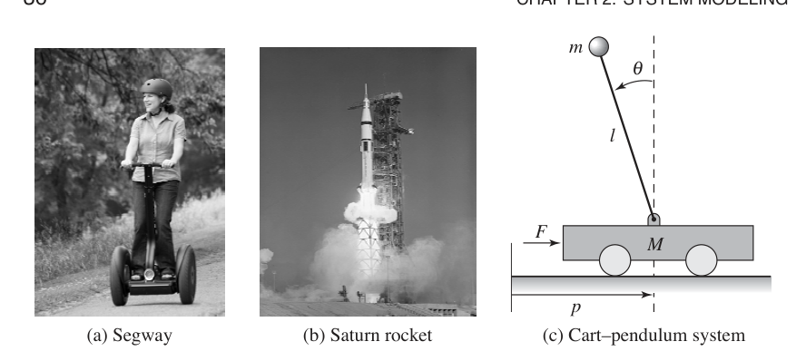
平衡系统可以看作前面弹簧质量系统的推广。机械系统动态可写成一般形式
其中 \(M(q)\) 是系统惯性矩阵，\(C(q,\dot q)\) 表示科里奥利力以及阻尼，\(K(q)\) 给出由势能产生的力，\(B(q)\) 描述外部施加的力如何耦合进动态。方程的具体形式可以用牛顿力学推导。注意，每一项都依赖系统构型 \(q\)，而且这些项常常是构型变量的非线性函数。
图 2.5c 给出一个平衡系统的简化图，它由小车上的倒立摆组成。为这个系统建模时，我们选择状态变量来表示系统基座的位置和速度 \(p,\dot p\)，以及基座上方结构的角度和角速度 \(\theta,\dot\theta\)。令 \(F\) 表示施加在系统基座上的力，并假设它沿水平方向，与 \(p\) 对齐，同时选择系统的位置和角度作为输出。在这些定义下，可以用牛顿力学计算系统动态，得到
其中 \(M\) 是基座质量，\(m\) 和 \(J\) 是被平衡系统的质量和转动惯量，\(l\) 是从基座到被平衡物体质心的距离，\(c\) 和 \(\gamma\) 是黏性摩擦系数，\(g\) 是重力加速度。
通过定义状态 \(x=(p,\theta,\dot p,\dot\theta)\)、输入 \(u=F\) 和输出 \(y=(p,\theta)\)，我们可以把系统动态写成状态空间形式。如果定义总质量和总惯量为
并用 \(c_\theta=\cos\theta\)、\(s_\theta=\sin\theta\) 作为简写，运动方程可写为
许多情况下，角度 \(\theta\) 会非常接近 0，因此可以使用近似 \(\sin\theta\approx\theta\)、\(\cos\theta\approx 1\)。此外，如果 \(\dot\theta\) 很小，可以忽略 \(\dot\theta\) 的二次及更高阶项。把这些近似代入方程，就得到线性状态空间方程
其中 \(\mu=M_tJ_t-m^2l^2\)。
例 2.2 倒立摆
前一个例子的一个变体，是基座位置 \(p\) 不需要被控制的情况。例如，如果我们只关心稳定火箭的直立姿态，而不关心火箭基座的位置，就会出现这种情况。这个简化系统的动态为
其中 \(\gamma\) 是转动摩擦系数，\(J_t=J+ml^2\)，\(u\) 是施加在基座处的力。这个系统称为倒立摆。
差分方程
在某些情形下，相比连续时间，用离散时刻描述系统演化更自然。如果用整数 \(k=0,1,2,\ldots\) 表示这些时刻，就可以问系统状态对每个 \(k\) 如何变化。和微分方程情形一样，我们把状态定义为一组变量，它们汇总系统过去的影响，以便预测未来。用这种方式描述的系统称为离散时间系统。
离散时间系统的演化可以写成
其中 \(x[k]\in\mathbb{R}^n\) 是时刻 \(k\) 的系统状态，\(u[k]\in\mathbb{R}^p\) 是输入，\(y[k]\in\mathbb{R}^q\) 是输出。和前面一样，\(f\) 与 \(h\) 是适当维数的光滑映射。我们把式 (2.11) 称为差分方程，因为它说明 \(x[k+1]\) 如何不同于 \(x[k]\)。状态 \(x[k]\) 可以是标量，也可以是向量；在后一种情况下，我们用 \(x_j[k]\) 表示第 \(j\) 个状态在时刻 \(k\) 的值。
和微分方程一样，方程常常对状态和输入是线性的，此时系统可描述为
同前，我们把矩阵 \(A,B,C,D\) 分别称为动态矩阵、控制矩阵、传感器矩阵和直接项。具有初始条件 \(x[0]\) 和输入 \(u[0],\ldots,u[T]\) 的线性差分方程解为
差分方程也可以作为微分方程的近似，后文会说明这一点。
例 2.3 捕食者与猎物
作为离散时间系统的例子，考虑捕食者猎物系统的一个简单模型。捕食者猎物问题指一种生态系统，其中有两个物种，一个物种以另一个物种为食。人们研究这类系统已有数十年，并且知道它会表现出有趣动态。图 2.6 展示了猞猁种群和野兔种群 90 年的历史记录 [142]。从图中可以看到，两个物种的年度种群记录都具有振荡性质。
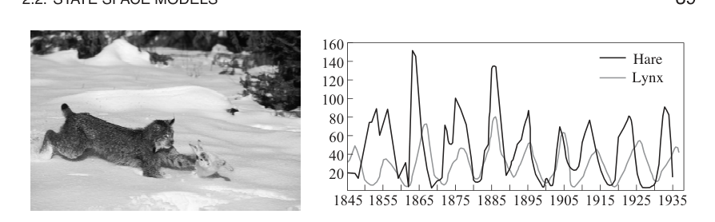
可以用离散时间模型构造这一情形的简单模型，方法是跟踪每个物种的出生率和死亡率。令 \(H\) 表示野兔数量，\(L\) 表示猞猁数量，我们可以用离散时间段上的种群数量描述状态。令 \(k\) 为离散时间指标，例如月份编号，则可写成
其中 \(b_r(u)\) 是单位时间段内野兔出生率，并作为食物供应 \(u\) 的函数；\(d_f\) 是猞猁死亡率；\(a\) 和 \(c\) 是相互作用系数。相互作用项 \(aL[k]H[k]\) 建模捕食率，假设它与捕食者和猎物相遇的速率成正比，因此由两个种群规模的乘积给出。猞猁动态中的相互作用项 \(cL[k]H[k]\) 形式类似，表示猞猁种群增长率。这个模型做了许多简化假设，例如野兔数量只会因猞猁捕食而减少，但它常常足以回答关于系统的基本问题。
为了说明这个系统的使用，我们可以从某个初始种群出发，计算每个时间点的猞猁和野兔数量。具体做法是从 \(x[0]=(H_0,L_0)\) 开始，然后用式 (2.13) 计算下一时间段的种群数量。迭代这个过程，就能生成随时间变化的种群。图 2.7 展示了特定参数和初始条件下这一过程的输出。虽然仿真细节与实验数据不同，考虑到假设很简单，这也在意料之中，但我们看到了定性上相似的趋势，因此可以用该模型帮助探索系统动态。
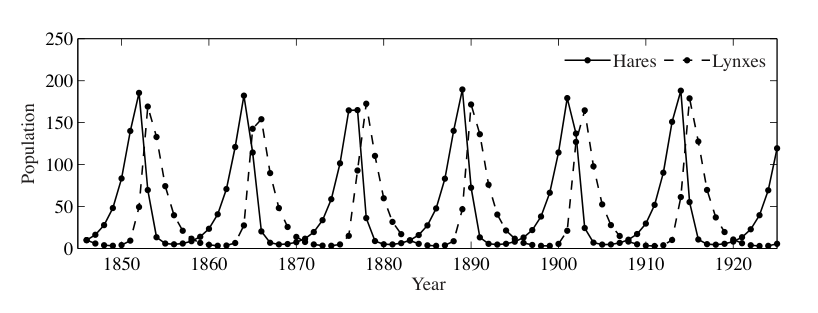
例 2.4 电子邮件服务器
IBM Lotus 服务器是一种协作软件系统，用来管理用户电子邮件、文档和笔记。客户端机器与终端用户交互，使其能够访问数据和应用。服务器也处理其他管理任务。在系统早期开发中，人们观察到，当服务请求过多导致中央处理器 CPU 过载时，性能很差，因此引入了控制负载的机制。
客户端与服务器之间的交互采用远程过程调用 RPC 的形式。服务器维护一份已完成请求的统计日志。正在被服务的请求总数也被测量，称为 RIS，即服务器中的 RPC 数。服务器负载由名为 MaxUsers 的参数控制，该参数设定到服务器的客户端连接总数。这个参数由系统管理员控制。服务器可以看作一个动态系统，其输入为 MaxUsers，输出为 RIS。输入与输出之间的关系最初通过考察稳态性能来研究，并发现是线性的。
文献 [97] 使用一阶差分方程形式的动态模型来捕捉该系统的动态行为。通过系统辨识技术，他们构造了如下模型：
其中 \(u=\text{MaxUsers}-\overline{\text{MaxUsers}}\)，\(y=\text{RIS}-\overline{\text{RIS}}\)。参数 \(a=0.43\) 和 \(b=0.47\) 描述系统在工作点附近的动态，\(\overline{\text{MaxUsers}}=165\)、\(\overline{\text{RIS}}=135\) 表示系统标称工作点。请求数在 60 s 采样周期内取平均。
仿真与分析
状态空间模型可以用来回答许多问题。正如前面例子所示，最常见的问题之一，是从给定初始条件出发预测系统状态演化。对简单模型而言，这可以用闭式形式完成；更常见的做法则是通过计算机仿真。人们还可以使用状态空间模型分析系统整体行为，而不直接依赖仿真。
再次考虑第 2.1 节中的带阻尼弹簧质量系统，不过这一次对它施加外力，如图 2.8 所示。我们希望预测在给定初始条件下，系统对周期强迫函数的运动，并确定所得运动的幅值、频率和衰减率。
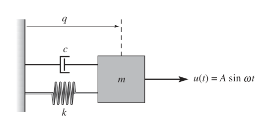
我们选择用线性常微分方程给系统建模。用胡克定律建模弹簧，并假设阻尼器施加的力与系统速度成正比，则有
其中 \(m\) 是质量，\(q\) 是质量块位移，\(c\) 是黏性摩擦系数，\(k\) 是弹簧常数，\(u\) 是施加的力。使用 \(x=(q,\dot q)\) 作为状态，并选择 \(y=q\) 作为输出，在状态空间形式中有
可以看到，这是一个具有一个输入 \(u\) 和一个输出 \(y\) 的线性二阶微分方程。
现在，我们希望计算系统对输入 \(u=A\sin\omega t\) 的响应。虽然可以解析求解该响应，这里我们改用一种不依赖该系统具体形式的计算方法。考虑一般状态空间系统
给定时刻 \(t\) 的状态 \(x\)，可以通过假设区间 \(t\) 到 \(t+h\) 内变化率 \(f(x,u)\) 保持常数，近似得到很短时间 \(h>0\) 之后的状态值：
迭代这个方程，就可以求得 \(x\) 随时间变化的函数。这个近似称为欧拉积分。事实上，如果令 \(h\) 表示时间增量，并写 \(x[k]=x(kh)\)，它就是一个差分方程。现代仿真工具，如 MATLAB 和 Mathematica，使用比欧拉积分更准确的方法，但仍具有一些同样的基本折中。
回到这个具体例子，图 2.9 显示了用式 (2.15) 计算 \(x(t)\) 的结果，并与解析计算比较。可以看到，随着 \(h\) 变小，计算解收敛到精确解。解的形式也值得注意：经过初始瞬态之后，系统进入周期运动。瞬态之后的响应部分称为对该输入的稳态响应。
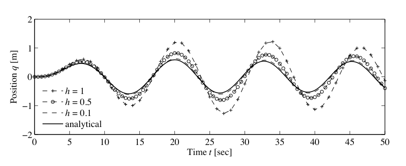
除了生成仿真，模型还可用于回答其他类型的问题。本书所述方法中有两个核心问题：平衡点的稳定性，以及输入输出频率响应。下面用例子说明这两类计算，后续章节会回到一般计算方法。
回到带阻尼弹簧质量系统，当没有输入强迫时，运动方程为
其中 \(x_1\) 是质量块位置，相对于静止位置，\(x_2\) 是其速度。我们希望说明，如果系统初始状态偏离静止位置，系统最终会回到静止位置。后面会把这种情况定义为静止位置渐近稳定。虽然可以通过仿真大量初始条件来启发式地说明这一点，我们希望证明它对任意初始条件都成立。
为此，我们构造一个函数 \(V:\mathbb{R}^n\to\mathbb{R}\)，把系统状态映射到正实数。对机械系统而言，一个方便选择是系统能量：
考察能量函数的时间导数，可得
它总是负数或零。因此 \(V(x(t))\) 从不增加，并且通过后文会形式化介绍的一点分析，可以知道各个状态必须保持有界。
如果想证明状态最终回到原点，就必须使用稍微更细的分析。直观地说，可以这样推理：假设在某段时间内，\(V(x(t))\) 停止下降。那么必有 \(\dot V(x(t))=0\)，继而说明同一段时间内 \(x_2(t)=0\)。此时 \(\dot x_2(t)=0\)，代入式 (2.16) 的第二行可得
因此 \(x_1\) 也必须等于零。也就是说，\(V(x(t))\) 唯一可能停止下降的情况，是状态已经在原点，也就是系统处于静止位置。由于我们知道 \(V(x(t))\) 从不增加，因为 \(\dot V\le 0\)，于是可以得出结论：原点对任意初始条件都是稳定的。
这种分析称为李雅普诺夫稳定性分析，第 4 章会详细讨论。它展示了使用模型分析系统性质的力量。
模型还可以用于另一类分析：计算系统对正弦输入的输出。我们再次考虑弹簧质量系统，但保留输入，并让系统保持原形式：
我们希望理解系统如何响应如下形式的正弦输入：
第 6 章会说明如何解析地完成这件事；这里先用仿真来计算答案。
首先注意，如果 \(q(t)\) 是式 (2.18) 在输入 \(u(t)\) 下的解，那么施加输入 \(2u(t)\) 会得到解 \(2q(t)\)，这很容易通过代入验证。因此，只需考察单位幅值输入 \(A=1\)。第二个观察是，后文第 5 章会证明，系统对正弦输入的长期响应本身也是同频率正弦，因此输出具有形式
其中 \(g(\omega)\) 称为系统增益，\(\varphi(\omega)\) 称为相位或相位偏移。
为了数值计算频率响应，可以在一组频率 \(\omega_1,\ldots,\omega_N\) 上仿真系统，并绘制每个频率处的增益和相位。图 2.10 给出了这类计算的一个例子。
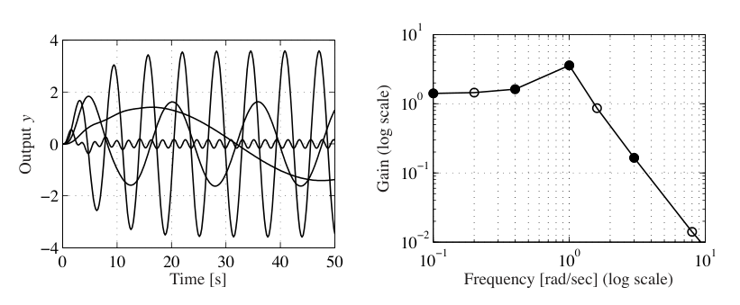
2.3 建模方法
为了处理大型复杂系统，使用系统的不同表示很有帮助。这些表示应捕捉基本特征，并隐藏无关细节。在科学和工程的所有分支中，使用某种图形化系统描述是常见做法，这类图称为示意图。示意图可以从风格化图片到高度简化的标准符号不等。它们使人能够获得系统整体视图，并识别单个组成部分。图 2.11 给出若干这类图的例子。示意图有用，因为它们给出系统整体图像，显示不同子过程及其互连，并指出可操纵变量和可测量信号。
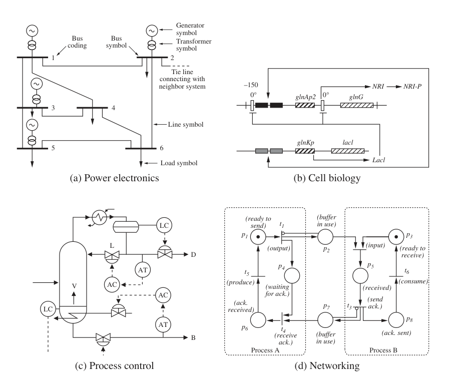
框图
控制工程中发展出了一种称为框图的特殊图形表示。框图的目的，是强调信息流并隐藏系统细节。在框图中，不同过程元素用方框表示；每个方框的输入用指向方框的带箭头线表示，输出用从方框指向外部的带箭头线表示。输入表示影响某个过程的变量，输出表示我们感兴趣的信号，或者影响其他子系统的信号。框图也可以组织成层次结构，其中单个方框本身还可以包含更详细的框图。
图 2.12 显示了本书使用的一些框图记号。信号表示为线条，箭头表示输入和输出。第一个图表示两个信号求和。输入输出响应表示为矩形，方框中写系统名称或数学描述。两个特殊情形是比例增益和积分器：比例增益把输入乘以一个因子，积分器输出输入信号的积分。
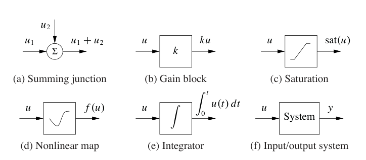
图 2.13 说明了框图的使用，这里建模的是一只苍蝇逆风飞行时的飞行控制系统。昆虫的飞行动力学极其复杂，涉及苍蝇体内肌肉的精密协调，以便在外部刺激下保持稳定飞行。人们知道苍蝇的一个特性是，它能够利用复眼中的光流作为反馈机制逆风飞行。粗略地说，苍蝇控制自身姿态，使视觉场的收缩点位于视觉场中心。
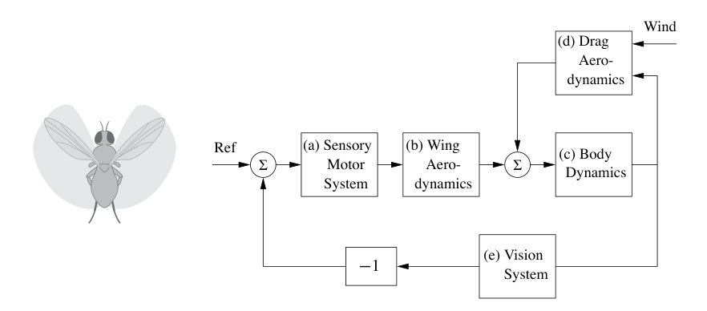
为了理解这种复杂行为，我们可以把系统总体动态分解为一系列互连子系统，也就是方框。参照图 2.13，可以用五个方框的互连来建模昆虫导航系统。感觉运动系统 a 接收视觉系统 e 的信息，并生成肌肉命令，试图引导苍蝇，使收缩点居中。肌肉命令通过翅膀拍动 b 转换为力，并产生相应气动力。翅膀产生的力与苍蝇受到的阻力 d 组合，形成作用于苍蝇身体的合力。风速通过阻力气动进入系统。最后，身体动态 c 描述苍蝇如何在所施加合力作用下平移和转动。昆虫的位置、速度和姿态作为输入反馈给阻力气动方框和视觉系统方框。
图中的每个方框本身都可能是复杂子系统。例如，果蝇视觉系统由两只复杂复眼组成，每只眼约有 700 个元件；感觉运动系统则包含约 200000 个用于处理信息的神经元。昆虫飞行控制系统的更详细框图会显示这些元素之间的互连。不过这里我们用一个方框表示苍蝇运动如何影响视觉系统输出，用第二个方框表示苍蝇大脑如何处理视觉场并生成肌肉命令。方框的细节层级选择，以及哪些元素需要分到不同方框，常常取决于经验，也取决于人们希望用模型回答什么问题。框图的一项强大特征，是能够隐藏那些对理解系统基本动态并非必要的系统细节。
从实验建模
由于控制系统配有传感器和执行器，也可以通过对过程进行实验来获得系统动态模型。实验只能访问输入和输出信号，因此模型局限于输入输出模型。不过，借助反馈和互连，从实验建模也可以与从物理原理建模结合起来。
确定系统动态的一种简单方法，是观察系统对控制信号阶跃变化的响应。这样的实验从把控制信号设为常值开始；待稳态建立后，把控制信号快速改为新水平，并观察输出。实验给出系统的阶跃响应，而响应形状提供关于动态的有用信息。它直接给出响应时间的指示，也显示系统是否振荡，或者响应是否单调。
例 2.5 弹簧质量系统
考虑第 2.1 节中的弹簧质量系统，其动态为
我们希望通过测量系统对幅值为 \(F_0\) 的阶跃输入的响应，确定常数 \(m,c,k\)。
第 6 章会说明，当 \(c^2<4km\) 时，该系统从静止构型出发的阶跃响应为
从解的形式可以看到，响应形状由系统参数决定。因此，通过测量阶跃响应的若干特征，可以确定参数值。
图 2.14 显示系统对幅值 \(F_0=20\) N 的阶跃输入的响应，以及一些测量量。首先注意，质量块的稳态位置，也就是振荡消失后的所在位置，是弹簧常数 \(k\) 的函数：
其中 \(F_0\) 是所施加力的幅值，对单位阶跃输入有 \(F_0=1\)。参数 \(1/k\) 称为系统增益。振荡周期可在两个峰值之间测量，并且必须满足
最后，振荡衰减率由解中的指数因子给出。测量两个峰值之间的衰减量，有
利用这组三个方程，可以求解参数。对图 2.14 中的阶跃响应，可得 \(m\approx 50\) kg，\(c\approx 10\) N s/m，\(k\approx 40\) N/m。
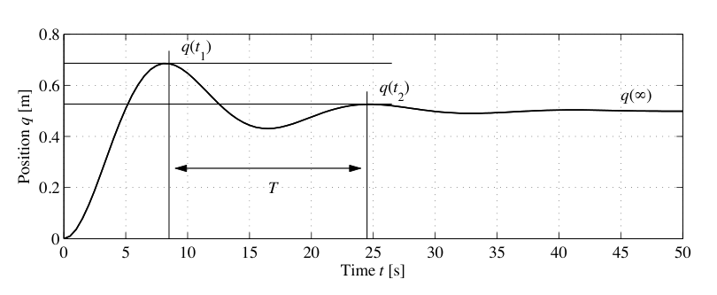
从实验建模也可以使用许多其他信号。正弦信号很常用，尤其对动态很快的系统，并且可以利用相关技术获得精确测量。用不同幅值的输入信号重复实验，则可以获得非线性存在的指示。
归一化与尺度变换
得到模型之后，引入无量纲变量对变量进行尺度变换常常很有用。这样的过程经常可以通过减少参数数量来简化系统方程，并揭示模型的有趣性质。尺度变换还可以改善模型的数值条件，使仿真更快、更准确。
尺度变换的过程很直接：为每个独立变量选择单位，并把变量除以选定的归一化单位，引入新变量。下面用两个例子说明这个过程。
例 2.6 弹簧质量系统
再次考虑前面介绍的弹簧质量系统。忽略阻尼时，系统由
描述。该模型有两个参数 \(m\) 和 \(k\)。为了归一化模型，引入无量纲变量 \(x=q/l\) 和 \(\tau=\omega_0t\)，其中 \(\omega_0=\sqrt{k/m}\)，\(l\) 是选定的长度尺度。我们用 \(ml\omega_0^2\) 对力进行尺度变换，并引入 \(v=u/(ml\omega_0^2)\)。于是尺度变换后的方程为
这就是归一化后的无阻尼弹簧质量系统。注意，归一化模型没有参数，而原模型有两个参数 \(m\) 与 \(k\)。进一步引入尺度化的无量纲状态变量
模型可以写作
这个简单线性方程描述任意弹簧质量系统的动态，并且独立于具体参数，因此能让我们洞察这种振荡系统的基本动态。要恢复物理振荡频率或幅值，就必须反向应用已经做过的尺度变换。
例 2.7 平衡系统
考虑第 2.1 节中的平衡系统。通过在式 (2.9) 中取 \(c=0\)、\(\gamma=0\) 忽略阻尼，模型可写为
令 \(\omega_0=\sqrt{mgl/(J+ml^2)}\)，选择长度尺度为 \(l\)，时间尺度为 \(1/\omega_0\)，力尺度为 \((M+m)l\omega_0^2\)，并引入尺度化变量 \(\tau=\omega_0t\)、\(x=q/l\)、\(u=F/((M+m)l\omega_0^2)\)。方程于是变为
其中 \(\alpha=m/(M+m)\)，\(\beta=ml^2/(J+ml^2)\)。注意，原模型有五个参数 \(m,M,J,l,g\)，而归一化模型只有两个参数 \(\alpha\) 与 \(\beta\)。如果 \(M\gg m\) 且 \(ml^2\gg J\)，则有 \(\alpha\approx 0\)、\(\beta\approx 1\)，模型可以近似为
这个模型可以解释为一个质量与一个倒立摆的组合，它们由同一输入驱动。
模型不确定性
减少不确定性是使用反馈的主要原因之一，因此刻画不确定性很重要。进行测量时，一个良好传统是同时给出标称值和不确定性度量。把同一原则用于建模也很有用，但遗憾的是，定量表达模型不确定性常常很困难。
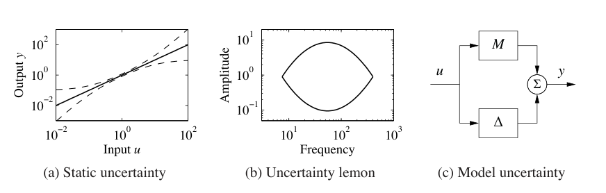
对于输入输出关系可由函数刻画的静态系统，可以用不确定性带表达不确定性，如图 2.15a 所示。在低信号水平处，会有来自传感器分辨率、摩擦和量化的不确定性。某些排队系统或细胞模型基于平均值，小种群情况下会呈现显著变化。在大信号水平处，会出现饱和甚至系统故障。模型较为准确的信号范围在不同应用之间差异很大，但很少能找到在超过 \(10^4\) 的信号范围内都准确的模型。
刻画动态模型的不确定性要困难得多。我们可以尝试通过给模型参数赋予不确定性来捕捉不确定性，但这常常不够。被忽略的现象也可能造成误差，例如小时间延迟。在控制中，最终检验是基于模型设计出的控制系统表现如何，而时间延迟可能很重要。不确定性还有频率方面。某些慢现象，例如老化，会导致系统变化或漂移。也存在高频效应：在很高频率下，电阻不再是纯电阻；梁具有刚度，在受到高频激励时会表现出额外动态。图 2.15b 所示的不确定性柠檬 [83] 是理解系统不确定性的一种方式。它说明，模型只在某些幅值和频率范围内有效。
第 12 章会使用图 2.15c 这类图形，引入一些表示不确定性的形式化工具。这些工具使用传递函数概念，而传递函数描述输入输出系统的频率响应。现在只需注意，我们总应小心识别模型的适用边界，不要在适用范围之外使用模型。例如，可以描述不确定性柠檬，然后检查信号是否保持在这个区域内。早期模拟计算中，系统使用运算放大器仿真，当某些信号水平被超过时，发出警报是惯例。类似功能也可以加入数字仿真。
2.4 建模例子
本节介绍更多例子，说明可以为哪些不同类型系统发展微分方程模型和差分方程模型。这些例子特意来自多个不同领域，以突出反馈与控制概念可以应用于广泛系统。下一章会给出一组更详细的应用例子，它们将在全书中持续使用。
运动控制系统
运动控制系统使用计算和反馈来控制机械系统运动。运动控制系统范围很广，从纳米定位系统，例如原子力显微镜和自适应光学，到 CD 播放器磁盘驱动器读写头控制系统，再到制造系统，例如传送机和工业机器人，汽车控制系统，例如防抱死制动、悬架控制、牵引力控制，以及航空和空间飞行控制系统，例如飞机、卫星、火箭和行星漫游车。
例 2.8 车辆转向：自行车模型
运动控制中的一个常见问题，是通过会改变方向的执行器控制车辆轨迹。汽车方向盘和自行车前轮是两个例子，不过类似动态也出现在船舶转向，或者飞机俯仰动态控制中。许多情况下，我们可以借助一个捕捉系统基本运动学的简单模型，理解这些系统的基本行为。
考虑图 2.16 所示的两轮车辆。为研究转向，我们关心一个模型，它描述车辆速度如何依赖转向角 \(\delta\)。具体地说，考虑质心处的速度 \(v\)，质心距离后轮 \(a\)，轮距为 \(b\)，见图 2.16。令 \(x,y\) 为质心坐标，\(\theta\) 为航向角，\(\alpha\) 为速度向量 \(v\) 与车辆中心线之间的夹角。由于 \(b=r_a\tan\delta\)，且 \(a=r_a\tan\alpha\)，可得 \(\tan\alpha=(a/b)\tan\delta\)，因此 \(\alpha\) 与转向角 \(\delta\) 之间的关系为
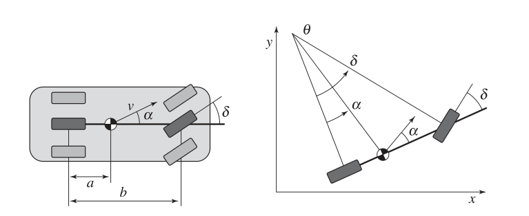
假设车轮滚动无滑移，且后轮速度为 \(v_0\)。车辆质心处速度为 \(v=v_0/\cos\alpha\)，可得该点运动为
为了看出角度 \(\theta\) 如何受转向角影响，从图 2.16 可知，车辆以角速度 \(v_0/r_a\) 围绕点 \(O\) 旋转。因此
在假设车轮与道路之间没有滑移、且两个前轮可以由车辆中心处的一个单轮近似的前提下，式 (2.23) 至式 (2.25) 可用于建模汽车。通过加入一个额外状态变量，可以放宽无滑移假设，得到更真实的模型。这类模型也描述船舶转向动态以及飞机和导弹的俯仰动态。还可以选择坐标，使参考点位于后轮处，对应于令 \(\alpha=0\)，这种模型常称为 Dubins 车 [66]。
图 2.16 表示车辆向前运动且采用前轮转向的情形。车辆倒车的情形可通过改变速度符号得到，这等价于一辆后轮转向的车辆。
例 2.9 矢量推力飞机
考虑矢量推力飞机的运动，例如图 2.17a 所示的 Harrier 跳跃式喷气机。Harrier 可以通过把推力向下重定向，并使用位于机翼上的小型机动推进器，实现垂直起飞。图 2.17b 给出了 Harrier 的简化模型，其中关注飞机机翼所在垂直平面内的运动。我们把主向下推进器和机动推进器产生的力分解为一对力 \(F_1\) 与 \(F_2\)，它们作用在飞机下方距离 \(r\) 处，距离由推进器几何决定。
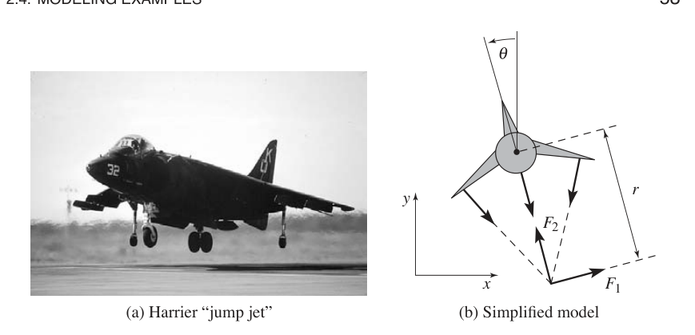
令 \((x,y,\theta)\) 表示飞机质心的位置和姿态。令 \(m\) 为车辆质量，\(J\) 为转动惯量，\(g\) 为重力常数，\(c\) 为阻尼系数。车辆运动方程为
重新定义输入，使原点在零输入下成为平衡点，是方便的。令 \(u_1=F_1\)、\(u_2=F_2-mg\)，则方程变为
这些方程把车辆运动描述为三组耦合二阶微分方程。
信息系统
信息系统范围很广，从互联网这类通信系统，到操作数据或管理整个企业资源的软件系统。反馈存在于所有这些系统中，而设计路由、流量控制和缓冲区管理策略，是典型问题。排队论中的许多结果来自电信系统设计，后来又来自互联网和计算机通信系统的发展 [32, 127, 177]。管理队列以避免拥塞是一个核心问题，因此我们从讨论排队系统建模开始。
例 2.10 排队系统
图 2.18 展示了一个简单队列的示意图。请求到达后排队并被处理。到达率和服务率可能有很大变化，当到达率大于服务率时，队列长度会增长。当队列变得过大时，系统会使用准入控制策略拒绝服务。
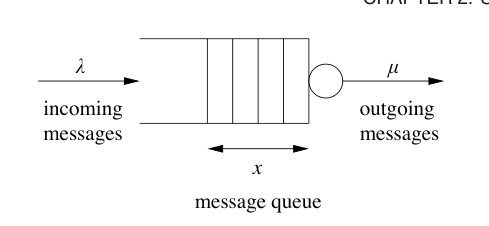
系统可以用许多方式建模。一种方式是对每个到达请求建模，这会得到基于事件的模型，其中状态是一个表示队列长度的整数。当请求到达或被服务时，队列发生变化。到达和服务的统计性质通常建模为随机过程。许多情况下，可以确定队列长度、服务时间等量的统计性质，但计算可能相当复杂。
使用流模型可以得到显著简化。我们不跟踪每个请求，而是把服务和请求看作流，类似于在分析流体时用连续介质取代分子。假设平均队列长度 \(x\) 是连续变量，且到达和服务是速率为 \(\lambda\) 与 \(\mu\) 的流，系统可以用一阶微分方程建模为
其中 \(\mu_{\max}\) 是最大服务率，\(f(x)\) 是介于 0 和 1 之间的数，它描述有效服务率如何依赖队列长度。
假设有效服务率依赖队列长度是自然的，因为较长队列需要更多资源。在稳态下有 \(f(x)=\lambda/\mu_{\max}\)。我们假设当 \(\lambda/\mu_{\max}\) 趋近于 0 时队列长度趋近于 0，当 \(\lambda/\mu_{\max}\) 趋近于 1 时队列长度趋于无穷。这意味着 \(f(0)=0\)，且 \(f(\infty)=1\)。此外，如果假设有效服务率随队列长度单调劣化，则函数 \(f(x)\) 是单调且凹的。一个满足基本要求的简单函数是 \(f(x)=x/(1+x)\)，它给出模型
这个模型由 Agnew [5] 提出。可以证明，如果到达过程和服务过程都是泊松过程，平均队列长度由式 (2.29) 给出；即使队列较短，式 (2.29) 也是良好近似，见 Tipper [193]。
为了探索模型 (2.29) 的性质，先研究到达率 \(\lambda\) 为常数时队列长度的平衡值。令式 (2.29) 中导数 \(dx/dt\) 为零并求解 \(x\)，得到队列长度 \(x\) 接近稳态值
图 2.19a 显示稳态队列长度如何随 \(\lambda/\mu_{\max}\) 变化。注意，当 \(\lambda\) 接近 \(\mu_{\max}\) 时，队列长度快速增加。若要让队列长度小于 20，需要 \(\lambda/\mu_{\max}<0.95\)。服务一个请求的平均时间为 \(T_s=(x+1)/\mu_{\max}\)，当 \(\lambda\) 接近 \(\mu_{\max}\) 时，它会急剧增加。
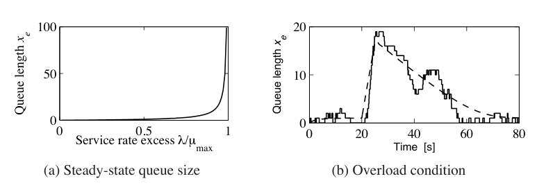
图 2.19b 展示了典型过载情形下服务器的行为。最大服务率为 \(\mu_{\max}=1\)，到达率初始为 \(\lambda=0.5\)。到达率在时刻 20 增至 \(\lambda=4\)，并在时刻 25 回到 \(\lambda=0.5\)。图中显示，队列很快堆积起来，却清空得很慢。由于响应时间与队列长度成正比，这意味着过载之后很长一段时间内服务质量都很差。这种行为称为高峰时段效应，已在 Web 服务器和许多其他排队系统中观察到，例如汽车交通。
图 2.19b 的虚线显示流模型的行为，它描述平均队列长度。这个简单模型在定性上捕捉了行为，但当队列长度较短时，不同样本之间会有变化。
许多复杂系统使用离散控制动作。可通过刻画对应于每个控制动作的情形来建模这类系统，下面的例子对此作出说明。
例 2.11 虚拟内存分页控制
计算机系统中使用反馈的早期例子之一，出现在 IBM 370 的 OS/VS 操作系统中 [43, 55]。该系统使用虚拟内存，使程序能够寻址比物理快速内存更大的内存空间。当前快速内存，即随机存取存储器 RAM 中的数据可直接访问，而位于较慢内存，即磁盘中的数据会自动载入快速内存。系统实现方式使程序员看来像是在使用一块很大的单一内存区域。该系统在许多情况下表现很好，但在过载情况下会出现很长执行时间，如图 2.20a 中空心圆所示。这个困难通过一个简单离散反馈系统解决。系统同时测量中央处理器 CPU 的负载，以及快速内存和慢速内存之间的页交换次数。运行区域被分类为三种状态之一：正常、欠载或过载。正常状态以高 CPU 活动为特征；欠载状态以低 CPU 活动和少量页面替换为特征；过载状态则具有中等到较低 CPU 负载但页面替换很多，见图 2.20b。区域之间的边界和测量负载所用时间，由使用典型负载的仿真确定。控制策略是在正常负载条件下不做任何事，在过载条件下把一个进程排除出内存，在欠载条件下允许一个新进程或先前被排除的进程进入。图 2.20a 中的叉号显示了这个简单反馈系统在仿真负载中的有效性。类似原则也用于许多其他情形，例如快速片上缓存。
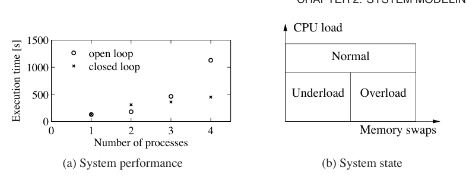
例 2.12 传感器网络中的一致性协议
传感器网络用于许多应用，其中我们希望使用多个通过通信网络连接的传感器，收集并汇总空间区域中的信息。例子包括监测地理区域或建筑物内的环境条件，监测动物或车辆运动，以及监测一组计算机的资源负载。在许多传感器网络中，计算资源与传感器一起分布，要求一组分布式智能体就某个性质达成一致可能很重要，例如某一区域的平均温度，或一组计算机中的平均计算负载。
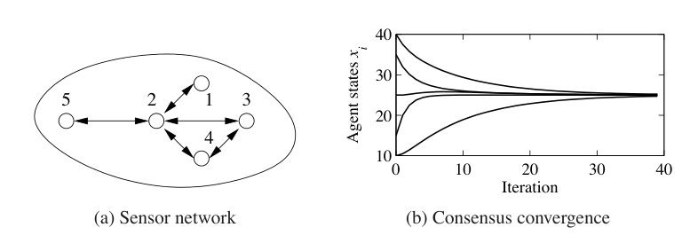
我们用图建模传感器网络的连通性，其中节点对应传感器，边对应两个节点之间存在直接通信链路。用记号 \(N_i\) 表示节点 \(i\) 的邻居集合。例如，在图 2.21a 所示网络中，\(N_2=\{1,3,4,5\}\)，\(N_3=\{2,4\}\)。
为了解决一致性问题，令 \(x_i\) 为第 \(i\) 个传感器的状态，对应该传感器对我们要计算的平均值的估计。把状态初始化为单个传感器测量到的量。于是，一致性协议或算法可以实现为局部更新律
这个协议试图通过根据邻居的值更新每个智能体的局部状态来计算平均值。所有智能体的组合动态可写为
其中 \(A\) 是邻接矩阵，\(D\) 是一个对角矩阵，其对角项对应每个节点的邻居数量。常数 \(\gamma\) 描述基于相邻节点信息更新平均值估计的速率。矩阵 \(L:=D-A\) 称为图的拉普拉斯矩阵。
式 (2.32) 的平衡点，是满足 \(x_e[k+1]=x_e[k]\) 的状态集合。可以证明，\(x_e=(\alpha,\alpha,\ldots,\alpha)\) 是系统的平衡状态，对应每个传感器对平均值有相同估计 \(\alpha\)。此外，可以证明 \(\alpha\) 确实是初始状态的平均值。由于图中可能存在环，系统状态有可能进入无限循环，永远不收敛到期望一致状态。形式化分析需要本书后面才会介绍的工具，不过可以证明，对任意连通图，总能找到一个 \(\gamma\)，使各个智能体状态收敛到平均值。图 2.21b 的仿真展示了这一性质。
生物系统
生物系统或许为反馈与控制例子提供了最丰富来源。稳态这一基本问题，即把温度或血糖水平等量调节到固定值，只是分子机器、细胞、有机体和生态系统中可能出现的众多复杂反馈相互作用之一。
例 2.13 转录调控
转录是信使 RNA，即 mRNA，从一段 DNA 生成的过程。基因的启动子区域允许其他蛋白质控制转录，这些蛋白质与启动子区域结合，并抑制或激活 RNA 聚合酶。RNA 聚合酶是一种从 DNA 产生 mRNA 转录本的酶。随后，mRNA 按照其核苷酸序列被翻译成蛋白质。这个过程如图 2.22 所示。
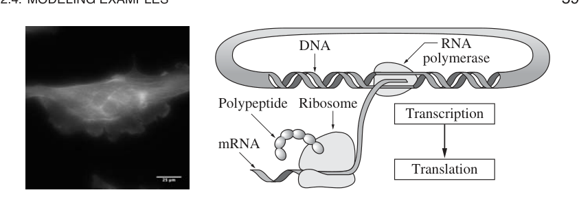
转录调控过程的一个简单模型使用 Hill 函数 [56, 154]。考虑蛋白 A 的调控，其浓度为 \(p_a\)，对应 mRNA 浓度为 \(m_a\)。令 B 是第二种蛋白，浓度为 \(p_b\)，它通过转录调控抑制蛋白 A 的产生。\(p_a\) 与 \(m_a\) 的动态可写为
其中 \(\alpha_{ab}+\alpha_{a0}\) 是未调控转录速率，\(\gamma_a\) 表示 mRNA 降解速率，\(\alpha_{ab},k_{ab},n_{ab}\) 是描述 B 如何抑制 A 的参数，\(\beta_a\) 表示由对应 mRNA 产生蛋白质的速率，\(\delta_a\) 表示蛋白 A 的降解速率。参数 \(\alpha_{a0}\) 描述启动子的泄漏性，\(n_{ab}\) 称为 Hill 系数，与启动子的协同性有关。
如果一种蛋白不是抑制另一种蛋白的产生，而是激活其产生，也可以使用类似模型。此时方程具有形式
其中变量含义与前面相同。注意，在激活子的情形中，如果 \(p_b\) 为零，产生速率就是 \(\alpha_{a0}\)；而在抑制子的情形中，对应速率为 \(\alpha_{ab}+\alpha_{a0}\)。当 \(p_b\) 变大时，\(\dot m_a\) 表达式中的第一项趋近于 \(\alpha_{ab}\)，转录速率变为 \(\alpha_{ab}+\alpha_{a0}\)，而抑制子情形中则趋近于 \(\alpha_{a0}\)。由此可见，激活子和抑制子的作用方式相反。
作为这些模型如何使用的例子，考虑 埃洛维茨和莱布勒最初提出的阻遏振荡器模型 [71]。阻遏振荡器是一个合成电路，其中三种蛋白质依次互相抑制，形成一个环。图 2.23a 示意了这一点，三种蛋白为 TetR、\(\lambda\)cI 和 LacI。这个阻遏振荡器的基本思想是，如果 TetR 存在，它会抑制 \(\lambda\)cI 的产生。如果 \(\lambda\)cI 不存在，LacI 就按未调控转录速率产生，进而抑制 TetR。一旦 TetR 被抑制，\(\lambda\)cI 就不再被抑制，如此循环。如果电路动态设计得当，所得蛋白浓度会振荡。
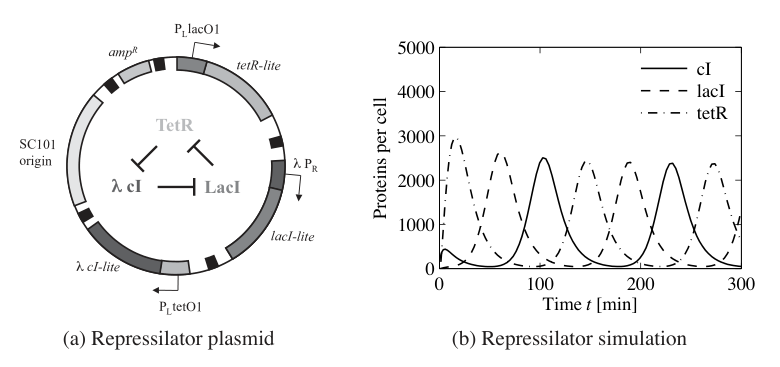
可以使用式 (2.33) 的三份副本来建模这个系统，并用 TetR、cI 和 LacI 的适当组合替换 A 和 B。系统状态于是为
图 2.23b 显示在参数 \(n=2\)、\(\alpha=0.5\)、\(k=6.25\times10^{-4}\)、\(\alpha_0=5\times10^{-4}\)、\(\gamma=5.8\times10^{-3}\)、\(\beta=0.12\)、\(\delta=1.2\times10^{-3}\)，以及初始条件 \(x(0)=(1,0,0,200,0,0)\) 下，三种蛋白浓度的轨迹，这些设置来自 [71]。
例 2.14 神经元网络中的波传播
细胞膜电位动态是理解细胞信号传递的基本机制，尤其对神经元和肌肉细胞而言。霍奇金赫胥黎方程提供了一个简单模型，用于研究神经元网络中的传播波。单个神经元的模型形式为
其中 \(V\) 是膜电位，\(C\) 是电容，\(I_{\mathrm{Na}}\) 和 \(I_{\mathrm{K}}\) 是由钠离子和钾离子跨细胞膜传输引起的电流，\(I_{\mathrm{leak}}\) 是泄漏电流，\(I_{\mathrm{input}}\) 是细胞的外部刺激。每个电流都遵循欧姆定律：
其中 \(g\) 是电导，\(E\) 是平衡电压。平衡电压由能斯特定律给出：
其中 \(R\) 是玻尔兹曼常数，\(T\) 是绝对温度，\(F\) 是法拉第常数，\(n\) 是离子电荷或价数，\(c_i\) 与 \(c_e\) 分别是细胞内和外部流体中的离子浓度。在 \(20^\circ\text{C}\) 时，\(RT/F=20\) mV。
霍奇金赫胥黎模型最初是为了预测枪乌贼巨轴突的定量行为而发展 [100]。霍奇金和赫胥黎与 J. C. Eccles 共同获得 1963 年诺贝尔生理学或医学奖，以表彰他们对神经细胞放电中电事件和化学事件的分析。第 1.3 节介绍的电压钳，是霍奇金和赫胥黎实验中的关键元素。
2.5 延伸阅读
建模在工程和科学中无处不在，并且在应用数学中有悠久历史。例如，傅里叶在建模固体热传导时引入了傅里叶级数 [76]。许多不同领域都发展出动态模型，包括力学 [12, 86]、热传导 [50]、流体 [37]、车辆 [1, 38, 69]、机器人 [156, 183]、电路 [92]、电力系统 [132]、声学 [30] 和微机械系统 [179]。控制理论需要来自许多不同领域的建模，多数控制理论教材都包含若干章，介绍使用常微分方程和差分方程建模，例如 [79]。Cannon [49] 是物理系统建模方面的经典著作，尤其涉及机械、电气和热流体系统。Aris [11] 的书非常有原创性，并且详细讨论了无量纲变量的使用。两位作者最喜欢的两本生物系统建模书是 J. D. Murray [154] 和 Wilson [203]。
习题
2.1 积分器链形式。考虑线性常微分方程 (2.7)。证明如果选择状态空间表示 \(x_1=y\)，则动态可写为
这个规范形称为积分器链形式。
2.2 倒立摆。使用平衡系统的运动方程，推导例 2.2 中所述倒立摆的动态模型，并验证当 \(\theta\) 很小时，动态可由式 (2.10) 近似。
2.3 离散时间动态。考虑如下离散时间系统：
其中
本题中，我们将考察这个离散时间系统的若干性质如何依赖参数、初始条件和输入。
a. 当 \(a_{12}=0\) 且 \(u=0\) 时，给出系统输出的闭式表达式。
b. 如果对所有 \(k\) 都有 \(x[k+1]=x[k]\)，离散系统处于平衡。令 \(u=r\) 为常值输入，计算系统所得平衡点。证明如果对所有 \(i\) 都有 \(|a_{ii}|<1\)，则所有初始条件给出的解都会收敛到该平衡点。
c. 编写计算机程序，绘制系统对单位阶跃输入 \(u[k]=1,\ k\ge 0\) 的输出。取 \(x[0]=0\)，并令 \(A\) 由 \(a_{11}=0.5\)、\(a_{12}=1\)、\(a_{22}=0.25\) 给出，绘制系统响应。
2.4 凯恩斯经济学。凯恩斯的经济简单模型为
其中 \(Y,C,I,G\) 分别是第 \(k\) 年的国民生产总值 GNP、消费、投资和政府支出。消费与投资由如下形式的差分方程建模：
其中 \(a,b\) 为参数。第一个方程表示消费随 GNP 增加而增加，但这种影响有延迟。第二个方程表示投资与消费变化率成正比。
证明 GNP 的平衡值为
其中参数 \(1/(1-a)\) 是凯恩斯乘数，即从 \(I\) 或 \(G\) 到 \(Y\) 的增益。当 \(a=0.25\) 时，政府支出的增加会导致 GNP 增加四倍。还要证明，该模型可写成如下离散时间状态模型：
2.5 最小二乘系统辨识。考虑一个可写成如下形式的非线性微分方程：
其中 \(f_i(x)\) 是已知非线性函数，\(\alpha_i\) 是未知但常值的参数。假设我们在时刻 \(t_1,t_2,\ldots,t_N\) 对完整状态 \(x\) 有测量值或估计值，并且 \(N>M\)。证明参数 \(\alpha_i\) 可以通过求一个如下形式线性方程的最小二乘解来确定：
其中 \(\alpha\in\mathbb{R}^M\) 是所有参数组成的向量，而 \(H\in\mathbb{R}^{N\times M}\)、\(b\in\mathbb{R}^N\) 需要适当定义。
2.6 归一化振子动态。考虑动态为
的带阻尼弹簧质量系统。令 \(\omega_0=\sqrt{k/m}\) 为固有频率，\(\zeta=c/(2\sqrt{km})\) 为阻尼比。
a. 证明通过重新尺度化方程，可以把动态写成
其中 \(u=F/k\)。这种动态形式对应固有频率为 \(\omega_0\)、阻尼比为 \(\zeta\) 的线性振子。
b. 证明系统可以进一步归一化，并写成
系统的基本动态由单一阻尼参数 \(\zeta\) 支配。有时也用 \(Q=1/(2\zeta)\) 这一 Q 值代替 \(\zeta\)。
2.7 发电机。连接到强电网的发电机可以用发电机转子的动量平衡建模：
其中 \(J\) 是发电机有效转动惯量，\(\delta\) 是转角，\(P_m\) 是驱动发电机的机械功率，\(P_e\) 是有功电功率，\(E\) 是发电机电压，\(V\) 是电网电压，\(X\) 是线路电抗。假设线路动态远快于转子动态，则 \(P_e=VI=(EV/X)\sin\delta\)，其中 \(I\) 是与电压 \(E\) 同相的电流分量，\(\delta\) 是电压 \(E\) 与 \(V\) 之间的相角。证明发电机动态具有一种归一化形式，它类似于例 2.2 中没有阻尼的倒立摆。
2.8 队列的准入控制。临时过载造成的长延迟，可以通过在队列变大时拒绝请求来减少。这样，被接受的请求可以快速得到服务，而无法容纳的请求也会快速收到拒绝，从而可以尝试另一台服务器。考虑带饱和的简单比例控制：
其中 \(\operatorname{sat}_{(a,b)}\) 在式 (3.9) 中定义，\(r\) 是期望的参考队列长度。使用仿真说明这个控制器会减少高峰时段效应，并解释 \(r\) 的选择如何影响系统动态。
2.9 生物开关。把两个抑制子连接成图示那样的循环，可以形成基因开关。使用例 2.13 中的模型，并假设两个基因的参数相同、mRNA 浓度很快达到稳态，证明动态可以用归一化坐标写成
其中 \(z_1,z_2\) 是蛋白质浓度的尺度化版本，时间尺度也已经改变。使用例 2.13 中的参数证明 \(\mu\approx 100\)，并用仿真展示系统的开关式行为。
2.10 电机驱动。考虑一个系统，其中电机驱动两个由扭转弹簧连接的质量，如下图所示。这个系统可以表示一台带柔性轴驱动负载的电机。假设电机输出的转矩与电流成正比，系统动态可由下列方程描述：
机器人柔性臂以及 DVD 和光盘驱动器的臂，也会得到类似方程。
通过引入归一化状态变量 \(x_1=\theta_1\)、\(x_2=\theta_2\)、\(x_3=\omega_1/\omega_0\)、\(x_4=\omega_2/\omega_0\)，推导该系统的状态空间模型，其中
是控制信号为零时系统的无阻尼固有频率。